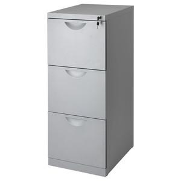

The purpose of this website is to simply have a place where the musicians don't have to root through their stuff to find music...
It soon became a hassle for me as a musician to look through the internet and the multiple books that I used to find songsthat I would only get to play maybe once or twice in the span of what could be more than two or three months. Long story short, I compiled every song I've ever had to look up and saved them for use later Like an inventory of sorts.